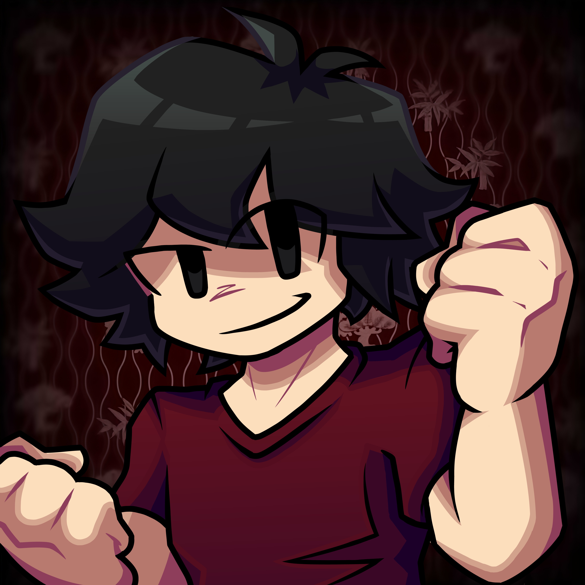

MyxelzDev
Programmer - Indie Dev - FNF Modder
Hola :D, soy Myxelz, programador, moder de FNF y desarrollador indie.
Me gusta crear ideas y darles vida a través de juegos o mods, construyendo poco a poco mi propio camino.
💠 Cada proyecto es un paso más hacia algo grande.
Un poco sobre mí
Soy Myxelz, desarrollador indie, programador y modder de FNF, me gusta mucho crear videojuegos, mods y experimentar con nuevas ideas.
Comencé haciendo mods de Friday Night Funkin' y poco a poco he ido explorando el desarrollo de videojuegos y otros proyectos.
Me gustaría contar con más colaboradores, especialmente compositores y artistas, para llevar mis ideas a otro nivel .
Actualmente cuento con varios amigos desarrolladores a quienes ayudo con sus proyectos.
Claro que a veces me gana la flojera XD, y la universidad me consume, pero cuando me pongo en modo chamba, ¡nadie me para!
A pesar de las dificultades en mi camino y de haber quedado al margen en distintas ocasiones, siempre he tratado de seguir con la cabeza en alto.
Continúo construyendo mi propio camino poco a poco, aprendiendo, creando y compartiendo esta aventura junto a mis amigos devs.
 YouTube
YouTube
 Itch.io
Itch.io